코드잇 스프린트 AI 15기 · 초급 프로젝트 · 3팀
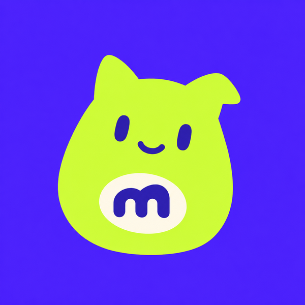
알약몬
찍으면 기록되고, 기록하면 캐릭터가 자라는 복약 서비스
실험 결과 보고서
최종 모델 YOLO11m | Kaggle mAP@[0.75:0.95] 0.63060 | 베이스라인 대비 +111% | 배포 Flutter 앱 |
알약몬은 알약 사진 한 장으로 복용을 기록하고, 그 기록을 캐릭터 성장과 질병 몬스터 퇴치라는 보상으로 이어 주는 1020 대상 복약 서비스다. 이 보고서는 그 핵심인 검출 모델을 다룬다. 우리는 사진 속 알약마다 위치와 종류를 찾는 검출 모델을 만들고, 기기 안에서 추론하는 Flutter 앱으로 배포했다. 대회 채점 대상은 56종이고, 앱 모델은 AI Hub 외부 전용 알약 40종을 더해 96종을 찾는다. 가장 큰 제약은 학습 사진 232장과 심한 클래스 불균형이었다. 그래서 AI Hub 외부 데이터로 희귀 클래스를 클래스당 157 bbox까지 채웠고, test에 대회 밖 알약이 있다는 것을 확인한 뒤에는 그 알약을 새 클래스로 학습했다. 그 결과 YOLO11m의 Kaggle mAP@[0.75:0.95]는 0.29946에서 0.63060으로 2.1배가 됐다. 같은 과정으로 YOLO26m은 0.60721, Faster R-CNN은 0.45759를 얻었다. 베이스라인에서는 YOLO26m이 0.18로 가장 낮았지만, 외부 데이터를 같은 방식으로 넣자 YOLO11m과 같은 수준(0.45379 대 0.44885)이 됐다. 증강·라벨 재검수·각인 OCR의 효과는 ±0.014 안으로, seed 하나로 잰 이 실험들에서는 노이즈와 구분되지 않았다. 이 데이터에서는 모델이나 증강보다 데이터의 양과 구성이 성능을 결정했다. 최종 모델은 우리가 낸 제출 중 최고점이고 앱 연동을 이미 마친 YOLO11m으로 정했다. 두 YOLO 모델의 정확도 우열은 이 실험들로 확정하지 못했다.
우리가 내린 결정의 흐름
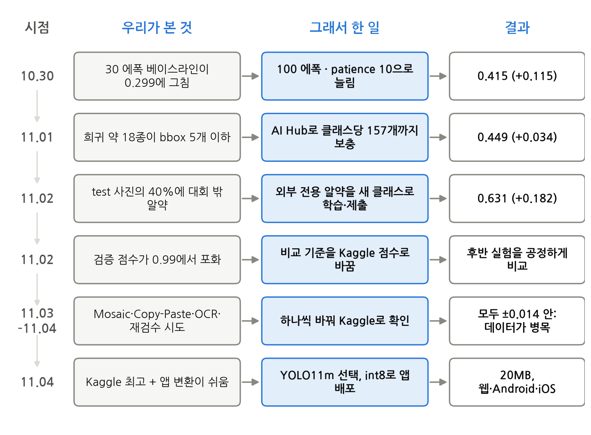
| 한 일 | 사진으로 복용을 기록하고 보상으로 기록을 이어 가게 하는 서비스를 정하고, 그 핵심인 알약 검출 모델을 Flutter 앱으로 배포했다. |
|---|---|
| 이유 | 복약 기록은 귀찮아서 끊기기 쉽고, 기록만 하는 앱은 이미 많기에 게임 보상형으로 차별화를 설계했다. |
| 결과 | 정확도(mAP@[0.75:0.95])를 주 지표로, 속도를 보조 기준으로 정했고, 모델은 기기 안에서 돈다. |
알약몬은 알약 사진을 찍으면 어떤 약인지 알아보고, 찍은 시각에 그 약을 먹은 것으로 기록한다. 처음에는 헬스케어 기록 앱으로 출발했지만, 기록만 해 주는 앱은 이미 많고 기록은 금방 끊긴다. 그래서 우리는 꾸준히 기록을 이어가도록 게임형 보상을 마련하여 기존 앱과의 한계를 개선하고 차별성을 설계했다. 주 사용자를 게임형 보상에 익숙한 10–20대로 잡았다. 영양제도 대상에 넣어 환자가 아닌 사람도 매일 쓰게 했다.
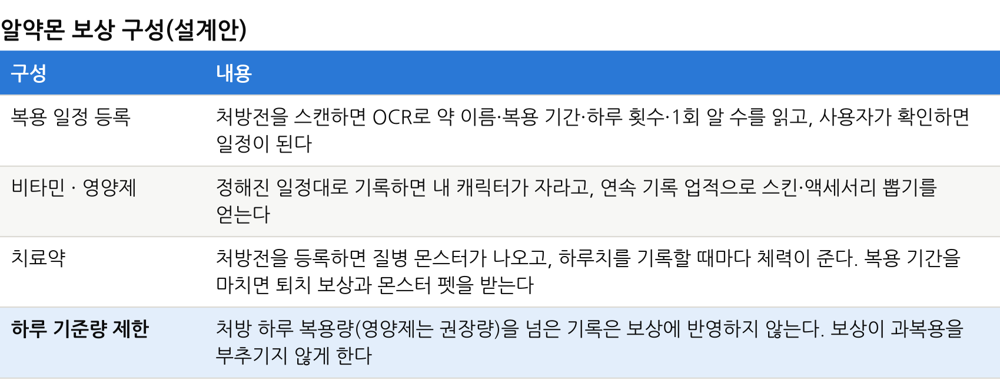
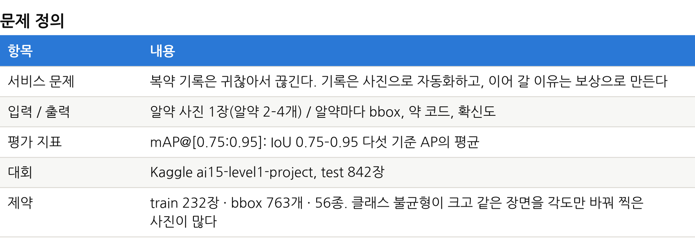
대회 페이지: Kaggle ai15-level1-project
우리는 학습한 모델을 기기 안에서 추론하는 Flutter 웹 앱으로 배포했다(Android·iOS는 아직 검증하지 않았다, 앱 저장소). 기기 안에서 돌리기로 한 것은 서버가 꺼져도 기록할 수 있고, 사진이 기기 밖으로 나가지 않기 때문이다.
모델 배포와 개선 순환
목적: 학습한 모델이 사용자에게 닿고, 다시 학습 데이터로 돌아오는 경로를 보인다. 읽는 법: 위 줄이 배포, 아래 줄이 사용자 데이터 수집이다.
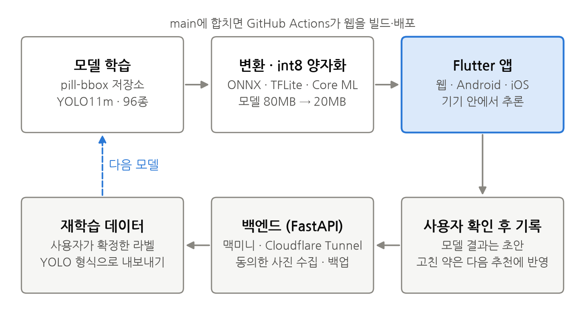
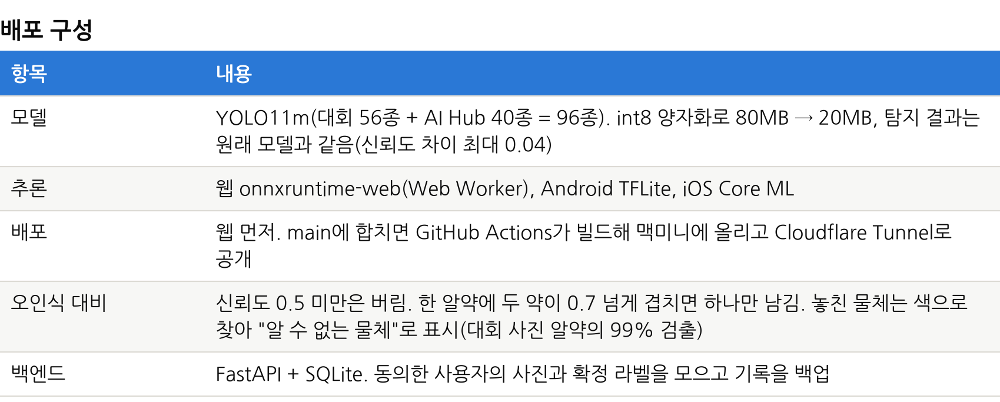
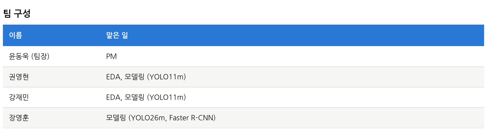
| 한 일 | 라벨 오류를 고치고, 같은 장면이 학습·검증에 나뉘지 않게 조합 단위로 나누고, AI Hub 데이터로 희귀 클래스를 채웠다. |
|---|---|
| 이유 | 232장 중 같은 장면이 많아 무작위 분할은 점수를 부풀리고, 희귀 약 18종은 bbox가 5개 이하였다. |
| 결과 | bbox 763 → 771개(v1), 누수율 90.9% → 조합 단위, 클래스 불균형 CV 1.534 → 0.099. |
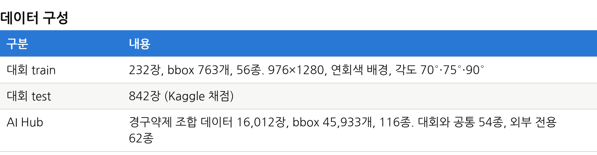
외부 데이터: AI Hub 경구약제 이미지 데이터
모든 실험이 같은 라벨·같은 분할을 쓰도록 데이터를 파이프라인 하나로만 만들었다. 원본 JSON은 고치지 않고 보정 기록(corrections.csv)으로 적용하며, 단계마다 자동 검사가 어긋나면 멈춘다.
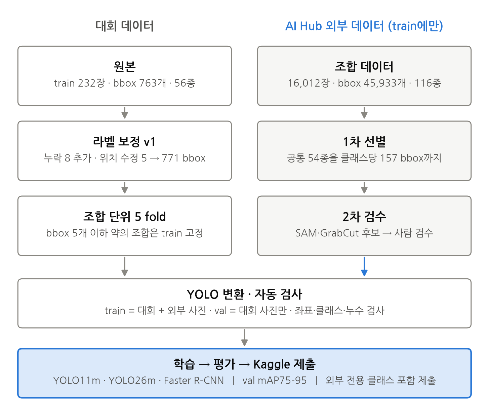
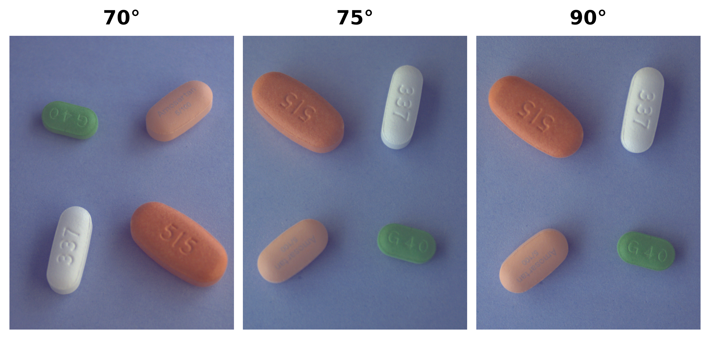
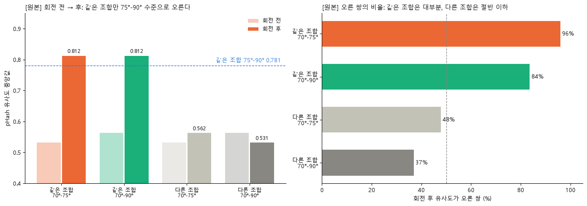
→ 같은 YOLO11m을 두 방식으로 학습해 보니, 세팅 단위 분할의 검증 점수(0.6047)가 조합 단위(0.8061)보다 0.20 낮았다. 세팅 공유 누수가 실제로 점수를 부풀린다는 근거다. 하지만 세팅 단위에서는 베이스라인 점수가 너무 낮게 나왔고 희귀 약을 배울 수 없거나 평가할 수 없게 된다.
조합 vs 셋팅 별 누수와 클래스 누락
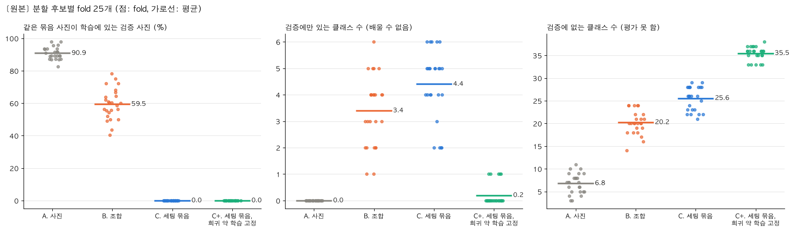
그래서 최종 분할은 조합 단위로 나누되 희귀 약(bbox 5개 이하)이 든 조합은 train에 고정했다.
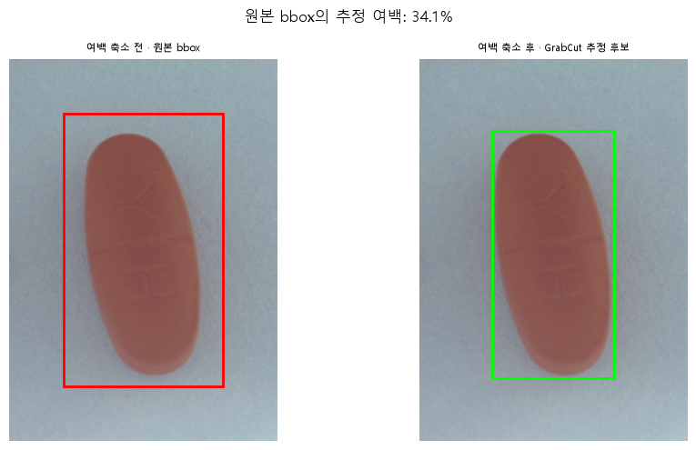
3351 한 종이 bbox의 20.4%(157개)인 반면, bbox 5개 이하인 약이 18종(32%)이다. 최대/최소가 51배이고, 희귀 약 18종 중 17종은 한 조합에서만 나온다. 우리는 불균형을 증강이 아닌 실제 사진으로 먼저 줄이기로 하고, AI Hub에서 가져오는 방법 다섯 가지를 비교했다.
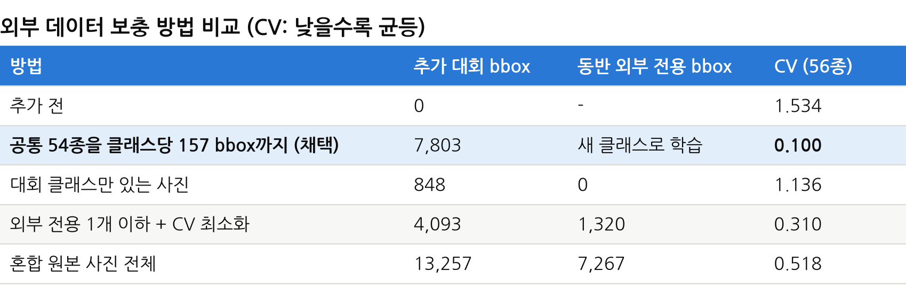
CV(변동계수)는 클래스별 bbox 수의 표준편차/평균이다. 157은 외부에 없는 최다 클래스 3351의 개수다.
→ 그래서 CV가 가장 낮고 test에 있을 외부 알약도 함께 들어오는 첫번째(157bbox) 안을 골랐다.
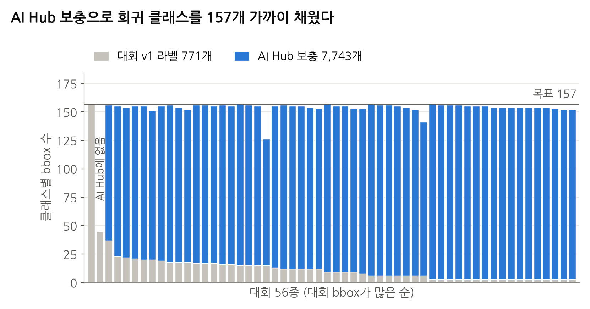
외부 데이터(ai_hub) 선별과 검수. 공통 54종을 클래스당 157개까지 seed 42로 뽑고, 좌표 오류·bbox 겹침·크기 불일치·대회와 같은 조합(검증 누수 가능)인 사진을 뺐다. 최종 5,842장(외부 bbox 21,720개, 외부 전용 40종)을 train에 더했다. 2차로 박스가 알약을 다 감싸지 못한 3,109개를 골라 SAM·GrabCut으로 후보를 만들고, 사람이 검수해 bbox 223개를 고치고 106장을 뺐다.
대회 라벨 보정(v1). 라벨 누락 8개, 위치가 틀린 박스 5개, 좌표가 겹친 박스 3쌍, 빈 박스 1개, 잘린 캡슐 박스를 고쳐 bbox를 763개에서 771개로 만들었다.
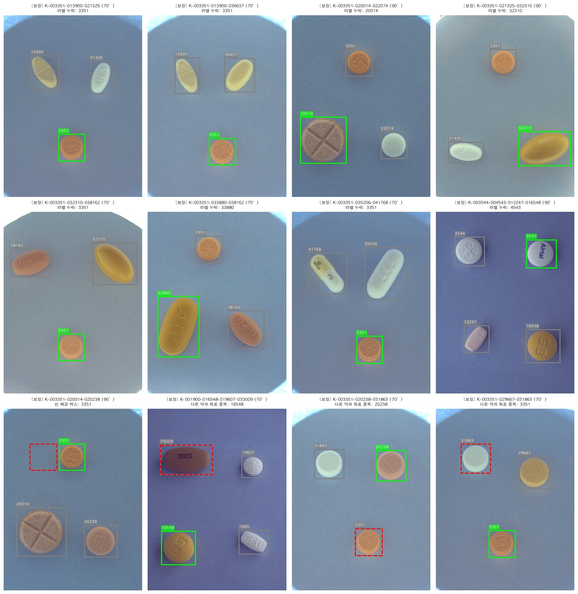
| 한 일 | one-stage 두 개(YOLO11m, YOLO26m)와 two-stage 하나(Faster R-CNN)를 같은 데이터 전략과 지표로 비교했다. 다만 분할과 실행 환경은 모델마다 달랐다(3.5). 선정 기준과 후보는 알약 인식·객체 검출 논문을 먼저 읽고 정했다. |
|---|---|
| 이유 | 약은 정확도가 우선이지만 휴대폰에서 바로 돌아야 해서, 정확도와 속도·변환 편의를 함께 봐야 했다. |
| 결과 | 우리가 낸 제출 중 최고점(0.63060)이고 앱 연동을 이미 마친 YOLO11m을 골랐다. 두 YOLO의 정확도 차이(0.024)는 조건이 달라 확정하지 못했다. |
우리는 모델을 고르기 전에 논문부터 읽었다. 알약 인식 연구 1편과 검출기 비교·설계 논문들에서 "어떤 기준으로 무엇을 비교해야 하는지"를 먼저 정했다. 아래 네 기준은 모두 논문 근거가 있다.
이 연구는 헝가리 병원 약제부에서 수작업 조제에 쓰는 약통(dosette box)에 알약을 넣고 찍은 사진으로, 자주 조제하는 약 30종을 인식하는 모델을 만들었다. 코드 기반 YOLO11과 클라우드 AutoML 3종(Amazon, Google, Microsoft)을 비교했다. 학습 사진 수가 성능에 주는 영향을 보려고, 로그 간격으로 사진 수를 늘린 하위집합 5개로 각각 학습했다. 테스트셋 하나는 한 사진에 알약이 여러 개 있어 우리 과제와 비슷하다
논문에서 본 것 | 우리가 한 결정 |
|---|---|
속도·정확도·학습 시간의 균형 때문에 중간 크기인 YOLO11-m을 썼다 | 후보를 m 크기로 맞췄다. l·x는 프로젝트 규모상 휴대폰에 넣기에 크다고 봤다 |
학습 사진을 1,230장에서 26,880장까지 늘렸을 때, YOLO11이 데이터에 비례해 가장 꾸준히 올랐다. 가장 어려운 임상 데이터셋에서 정확도는 22.71%에서 64.58%로 올랐다 | 우리 데이터(232장)가 병목이라고 보고, AI Hub 외부 데이터로 학습량을 늘리는 전략(2.4, 4.3)의 근거로 삼았다. |
정확도뿐 아니라 놓친 알약 비율(FNR)을 임상 안전 지표로 따로 봐야 한다고 했다. 이 논문은 mAP@0.5와 mAP@0.5–0.95를 썼다. | 캐글 대회 지표인 더 엄격한 mAP@[0.75:0.95]를 주 지표로 쓰고, 혼동행렬에서 놓친 알약 수를 따로 확인했다. |
해당 논문에선 YOLO11은 모든 데이터셋에서 1위는 아니었지만 항상 최상위권이었다. 학습 데이터가 늘수록 선형적으로 오른다는 것이 핵심적인 장점으로, 가장 큰 학습셋에서 정확도 80.83%, 정밀도 1.0, 재현율 0.96에 도달했다. 반면 최적 성능에는 더 큰 학습 데이터가 필요할 수 있다고 했다.
첫 번째 논문으로 "YOLO11, 그리고 m 크기"라는 방향을 정한 뒤, 우리는 YOLO11과 YOLO12, 그리고 최신 YOLO26 중 무엇을 쓸지 정해야 했다. 두번째 논문은 정제(알약) 사진에서 YOLO11·YOLO12·YOLO26을 크기별(n·s·m·l·x)로 15개 모두 같은 조건에서 비교한 연구다. 대신 본 논문은 동료 심사 전이라는 한계점을 가지고 있다.
논문에서 본 것 | 우리가 한 결정 |
|---|---|
YOLO11이 정확도와 속도를 모두 이끌었다. 최고 정확도는 YOLO11l(mAP@0.5 96.8%, mAP@0.5:0.95 91.7%)이었다. 가장 효율적인 것은 YOLO11n(mAP@0.5 95.6%, 파라미터 250만 개, 345.9 FPS)이었다 | 첫번째 논문과 같은 결과가 일치했기에, YOLO11을 기준 모델로 삼았다 |
크다고 항상 좋지 않았다. YOLO11의 mAP@0.5는 n 95.6%에서 l 96.8%까지 오른 뒤 x에서 96.6%로 오히려 내렸다 | L까지 키우지 않고, 첫 번째 논문처럼 속도와 정확도의 중간인 m 크기로 정했다 |
YOLO12는 정확도는 경쟁력 있지만, 크기가 커질수록 추론이 눈에 띄게 느렸다. attention 블록 A2C2f를 많이 쓰기 때문이다 | 휴대폰 속도가 중요해 YOLO12는 후보에서 뺐다 |
모양이 비슷한 클래스끼리 오류가 많았다 | 혼동 후보 약(2.3)을 정하고 혼동행렬을 반드시 보기로 했다(5.4) |
학습 설정: 640×640, 100 에폭, 모든 모델 같은 하이퍼파라미터 | 모델을 바꿔도 하이퍼파라미터는 고정했다(4.1). 베이스라인은 30 에폭으로 시작해 이후 100 에폭으로 맞췄다. 다만 YOLO26m은 대회 사진만으로 100 에폭을 돌리지 않았다(4.2) |
증강: 뒤집기·작은 회전·크기·이동, HSV, Mosaic | 같은 종류를 쓰되, 각인과 색이 약을 구분하는 단서라 뒤집기는 끄고 회전·색조는 약하게 두었다(4.1) |
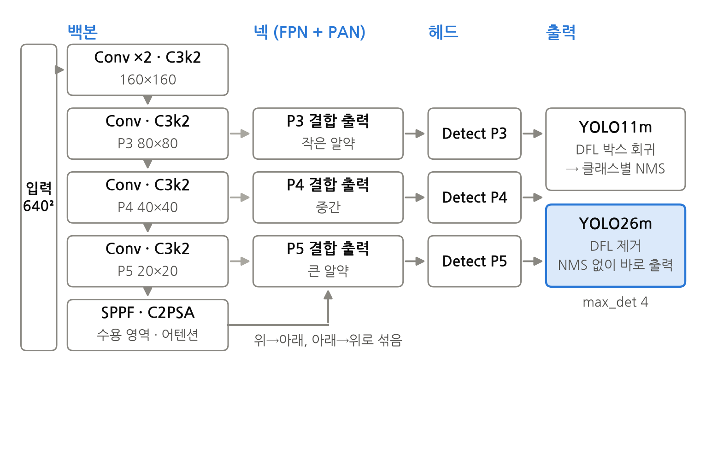
세 후보의 구조도 이 논문으로 이해했다
넥은 위→아래 경로와 아래→위 경로로 특징을 섞어 세 크기의 특징 맵을 만든다. 헤드는 작은·중간·큰 알약을 나눠 맡는다. YOLO11m은 YOLOv8m보다 파라미터가 약 22% 적다.
우리 공통 학습 설정의 MuSGD(4.1)도 여기서 왔다.
백본이 80·40·20 크기의 특징을 뽑고, 넥이 이를 섞어 작은 알약부터 큰 알약까지 세 크기에서 예측한다. 사진당 알약이 최대 4개라 max_det를 4로 두었다.
목적: two-stage가 YOLO와 다른 점을 보인다. 읽는 법: 파랑 두 칸이 두 단계다.
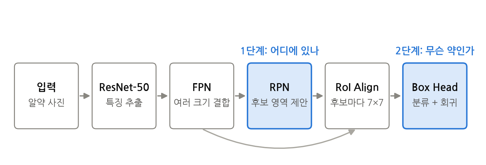
핵심: 후보 영역을 먼저 찾고, 그 영역만 다시 분류·회귀해 박스 정밀도를 높인다.
두 YOLO 후보를 기준별로 다시 놓으면 다음과 같다. 점수는 모두 Kaggle mAP@[0.75:0.95]다.
기준 | YOLO11m | YOLO26m |
|---|---|---|
최고 제출 | 0.63060 | 0.60721 (copy-paste 포함) |
같은 데이터 전략 | 0.44885 | 0.45379 |
분할 | combofix 5 fold | combo 단일 holdout (train 193장, val 39장) |
변환 구조 | DFL과 NMS 후처리가 필요하다 | DFL이 없고 NMS 없이 출력해 변환이 더 쉽다(3.4) |
앱 연동 | 웹(ONNX) 연동과 검증을 마쳤다. Android·iOS는 검증하지 않았다 | 하지 않았다 |
→ 그래서 YOLO11m을 고른 근거는 "더 정확해서"가 아니라 ① 우리가 낸 제출 중 최고점이었고 ② 앱 연동과 검증을 이미 마쳤기 때문이다. 정확도 우열을 확정하려면 같은 분할·seed 3개로 다시 비교해야 한다(YOLO26m 제외 결정 재검토 6절).
| 한 일 | 기준에서 한 번에 한 가지만 바꾸는 방식으로 학습량, 외부 데이터, 증강, OCR을 차례로 시험했다. |
|---|---|
| 이유 | 무엇이 점수를 움직이는지 분리해서 알아야 다음 실험을 고를 수 있었다. |
| 결과 | 학습량(+0.115), 외부 데이터(+0.034), 외부 전용 알약(+0.182)만 크게 올렸다. 나머지는 ±0.014 안으로, seed 하나로 잰 결과라 노이즈와 구분되지 않았다. |
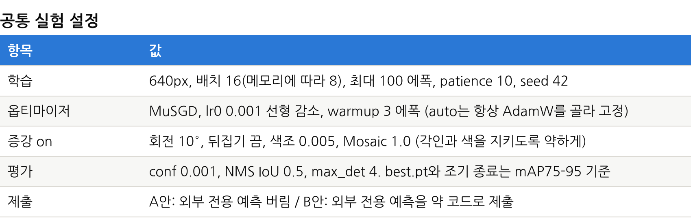
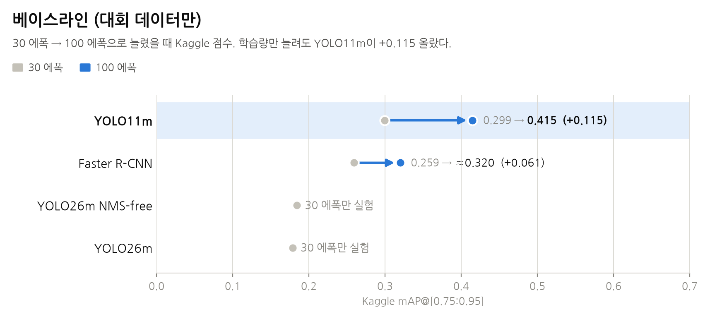
30 에폭 베이스라인에서는 YOLO11m이 가장 높았다. 30 에폭은 학습이 덜 됐다고 보고 100 에폭으로 늘리자 YOLO11m이 Kaggle +0.115로 크게 올랐다.
YOLO26m은 0.18로 가장 낮았고, 평가 헤드를 NMS에서 NMS-free로 바꿔도 0.17877 → 0.18437로 그대로였다. 우리는 이 결과만으로 10.31에 YOLO26m을 후보에서 뺐다가, 근거가 부족하다는 피드백을 받고 11.02에 다시 넣었다. 두 모델이 거친 단계를 나란히 놓으면 베이스라인의 차이는 모델 구조보다 학습량 부족으로 설명된다.
단계 (Kaggle mAP@[0.75:0.95]) | YOLO11m | YOLO26m | 근거 |
|---|---|---|---|
① 대회 사진만, 30 에폭 | 0.29946 | 0.17877 | #101, #102 |
② 대회 사진만, 100 에폭 | 0.41485 | 돌리지 않음 | #105 |
③ + AI Hub, 외부 알약 = 배경 | 0.44885 | 0.45379 | #105, #112 |
④ 외부 알약을 새 클래스로 학습·제출 | 0.63060 | 0.60721 | #109, #114 |
가설별 판정과 남은 검증 실험은 YOLO26m 제외 결정 재검토 문서에 정리했다.
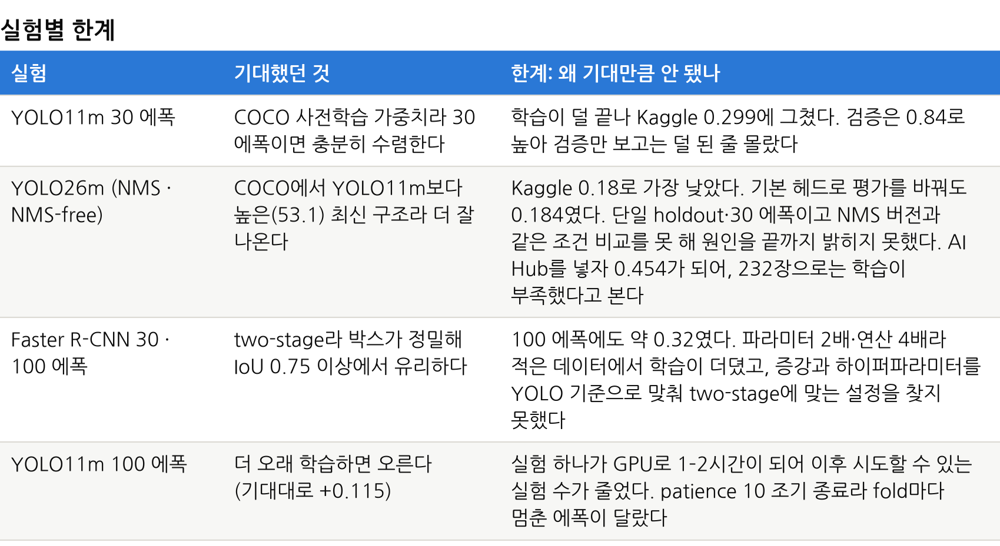
→ 그래서 이후 모든 실험을 100 에폭·patience 10으로 맞췄고, 후보는 같은 데이터 전략을 적용한 뒤에 비교하기로 했다.
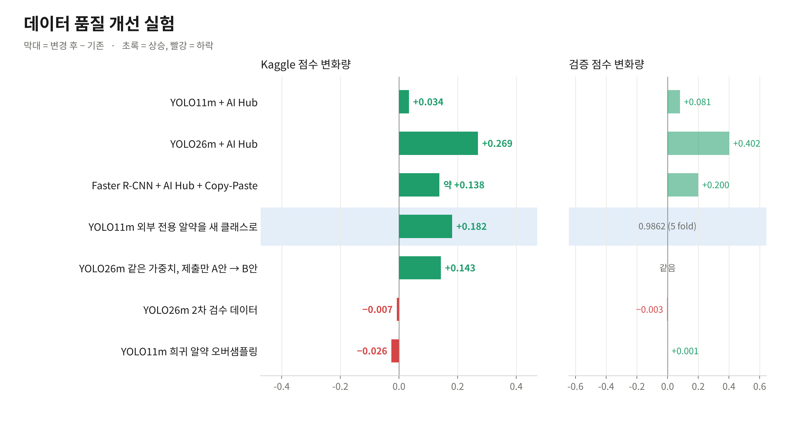
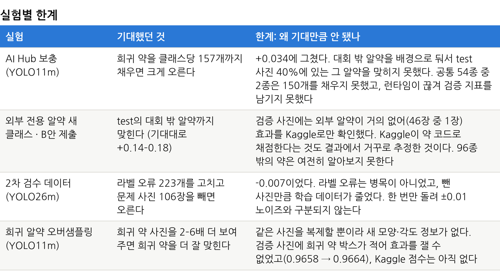
→ 그래서 외부 전용 알약을 새 클래스로 학습하고 약 코드로 제출하는 방식(B안)을 모든 모델의 기본으로 삼았다.
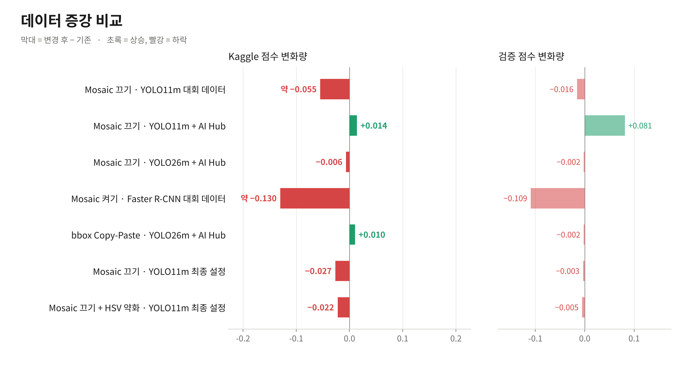
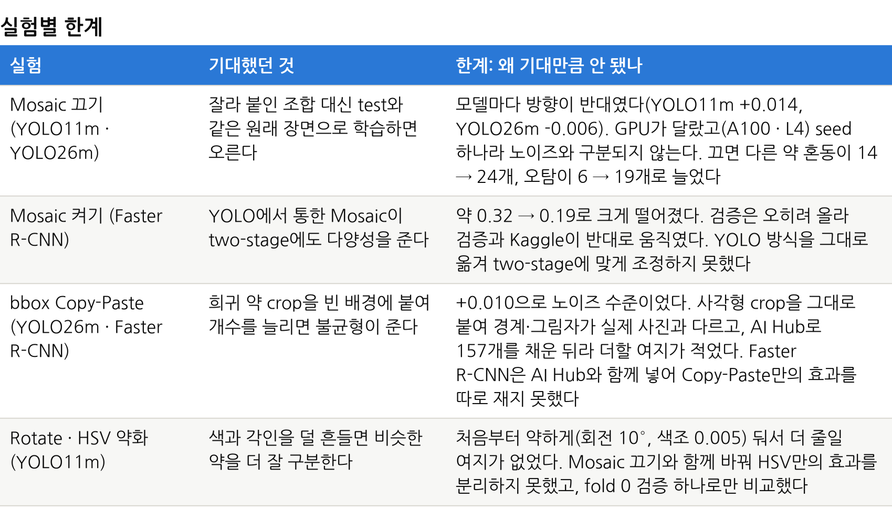
→ 그래서 최종 설정은 기본 증강(Mosaic 1.0, 회전 10°)을 그대로 두었다.
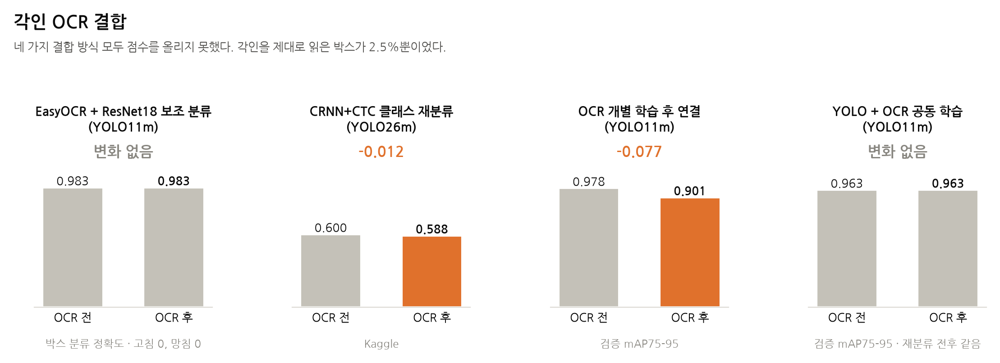
비슷하게 생긴 약을 각인 글자로 구분하려 했지만, EasyOCR이 각인을 정답과 0.8 이상 맞게 읽은 박스는 2.5%뿐이었다. 각인이 작고 음각이라 읽기 어렵고, 잘못 읽은 글자가 맞는 예측을 덮어써 오히려 점수가 내려갔다.
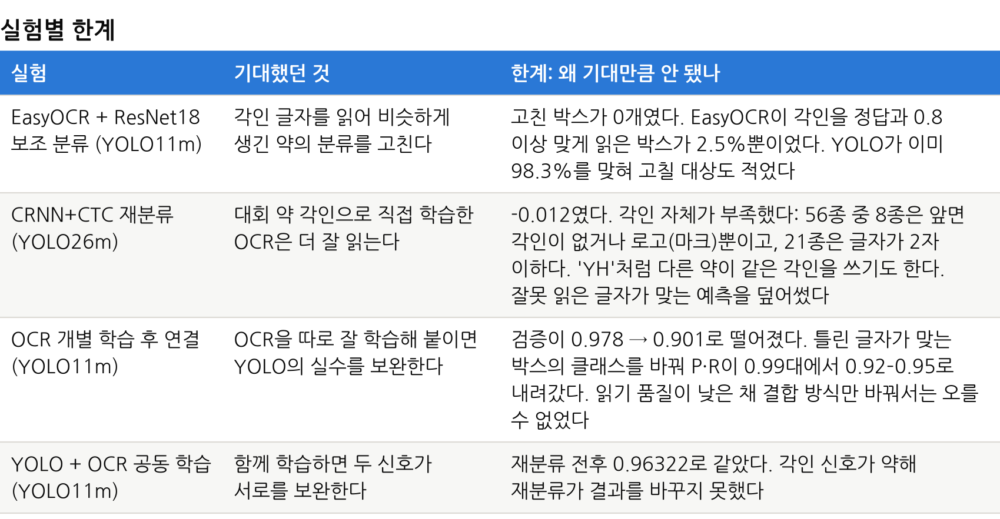
→ 그래서 최종 모델에서는 OCR을 뺐다. OCR을 쓰기 위해선 각인을 위한 준비가 필요하다고 판단.
모델별 베이스라인과 최고 점수
목적: 세 모델을 같은 출발점에서 비교한다. 읽는 법: 회색은 30 에폭 베이스라인, 파랑은 최고 제출이다.
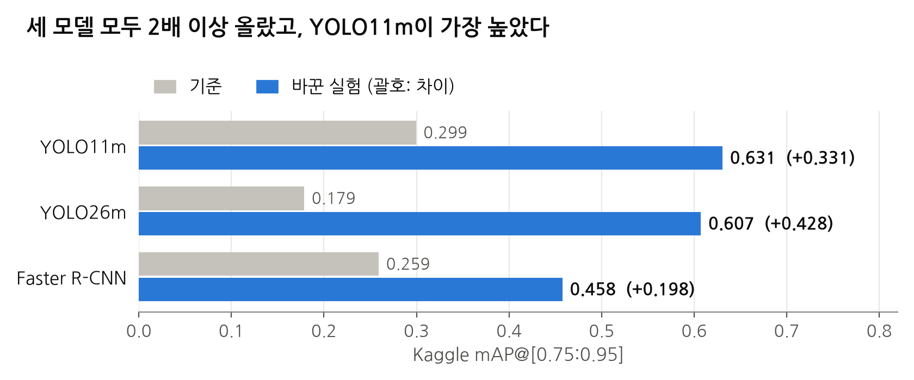
핵심: 같은 데이터 전략이 세 모델 모두에 통했고, 최고 제출은 YOLO11m의 0.631이었다. 다만 YOLO26m과의 차이(0.024)는 분할·증강·GPU가 달라 정확도 우열로 보지 않는다(3.5).
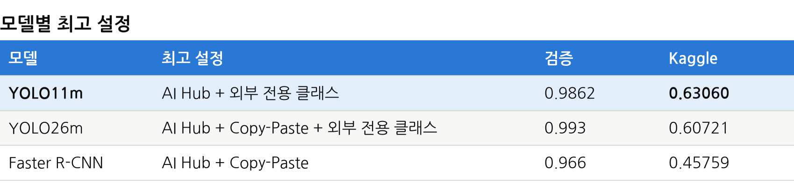
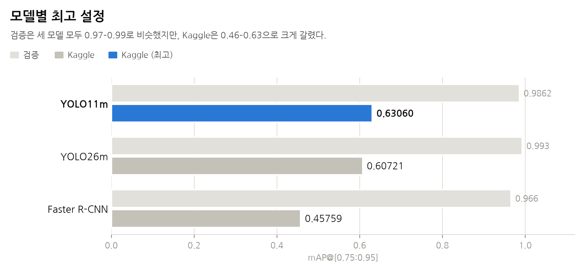
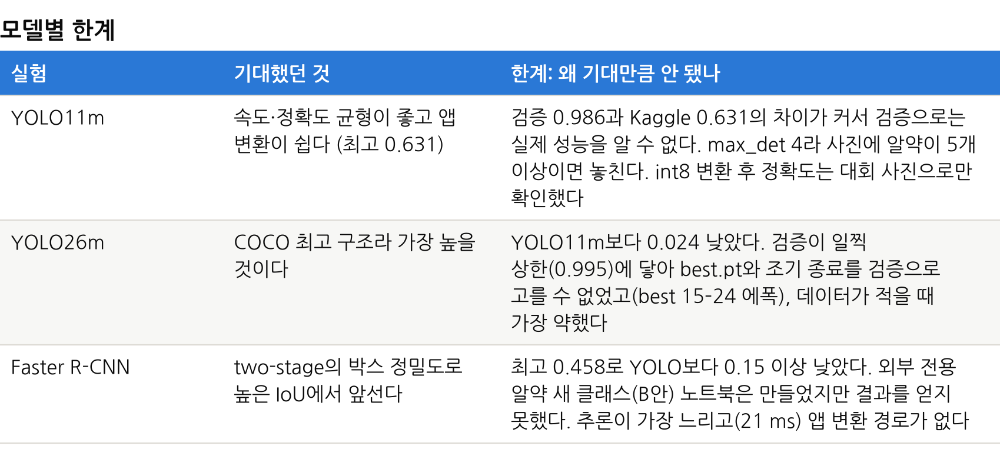
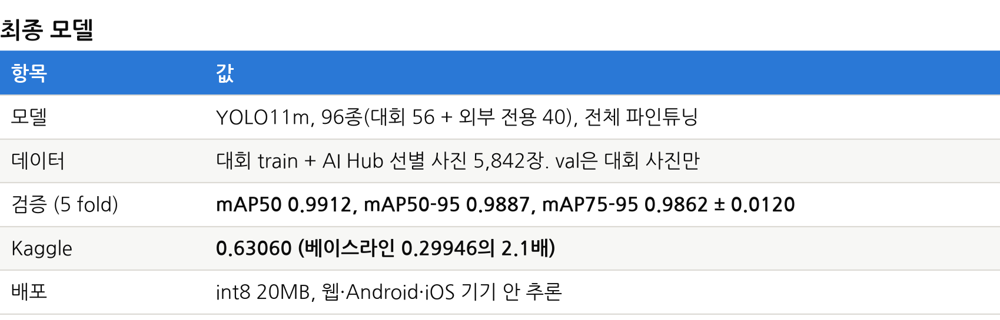
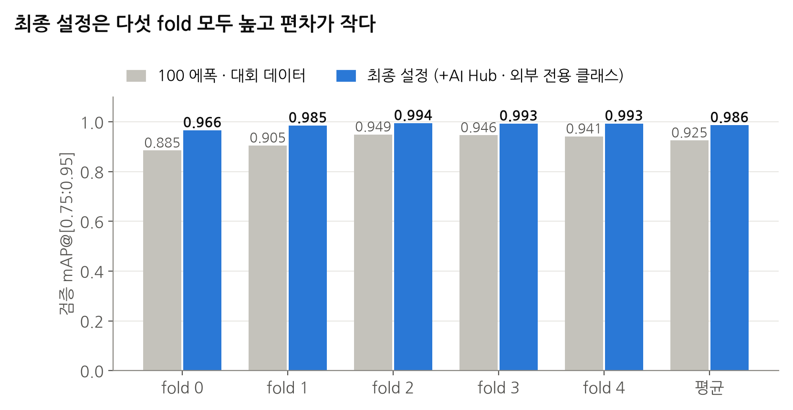
핵심: 다섯 fold 모두 올랐고, 표준편차가 0.029에서 0.012로 줄었다.
이 값은 검증 점수다. 5.2에서 보듯 검증은 0.99 근처에서 포화돼 있어, fold마다 학습이 고르게 수렴했다는 근거일 뿐 실제 사진에서의 성능을 보장하지는 않는다. 서비스 관점의 안정성 근거는 5.5에 모았다.
| 한 일 | 실험 결과를 목적별로 모아 보고, 검증 점수와 Kaggle 점수가 왜 어긋나는지 따져 봤다. |
|---|---|
| 이유 | 검증이 0.99에서 포화되어 어떤 실험이 진짜 나은지 검증만으로는 알 수 없었다. |
| 결과 | 데이터가 성능을 결정했고, 모델 선택은 Kaggle 점수로 해야 한다는 결론을 얻었다. |
실험 목적별 Kaggle 점수 변화
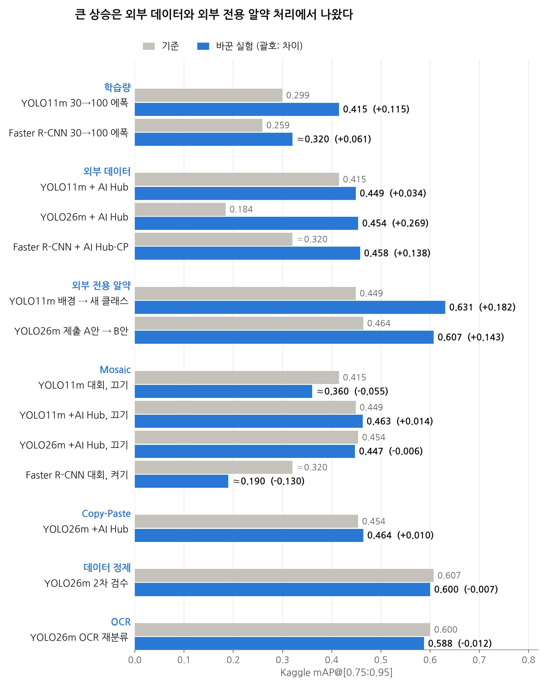
핵심: +0.1 이상은 모두 데이터 쪽(학습량, 외부 데이터, 외부 전용 알약)에서 나왔다. 외부 데이터를 쓴 뒤의 증강·정제·OCR은 ±0.014 안이었다.
같은 실험의 검증 점수와 Kaggle 점수
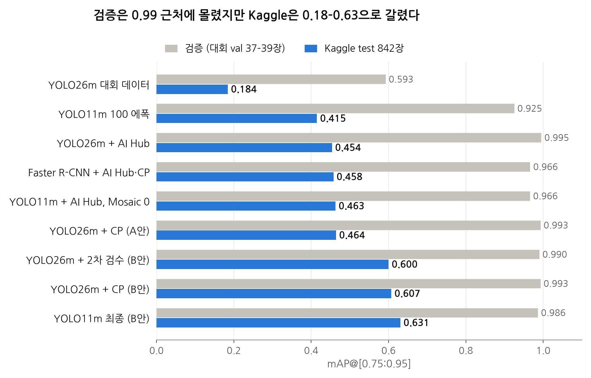
-왜 이렇게 차이가 났을까?
→ 그래서 실험 비교와 모델 선택은 Kaggle 점수로 했다.
최종 설정(yolo11m 베스트 모델)에 한 가지씩 더한 실험
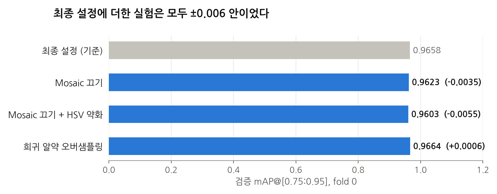
핵심: 모두 ±0.006 안이었고, 기존 최고기록 0.63060을 넘지 못했다. 증강으로 더 오를 여지가 거의 없다.
YOLO11m 혼동행렬 (100 에폭, 5 fold 합계, conf 0.25)
목적: 어떤 약을 무엇으로 헷갈리는지 본다. 읽는 법: 행은 예측, 열은 정답, 대각선이 맞힌 것이고 마지막 bg는 배경이다.
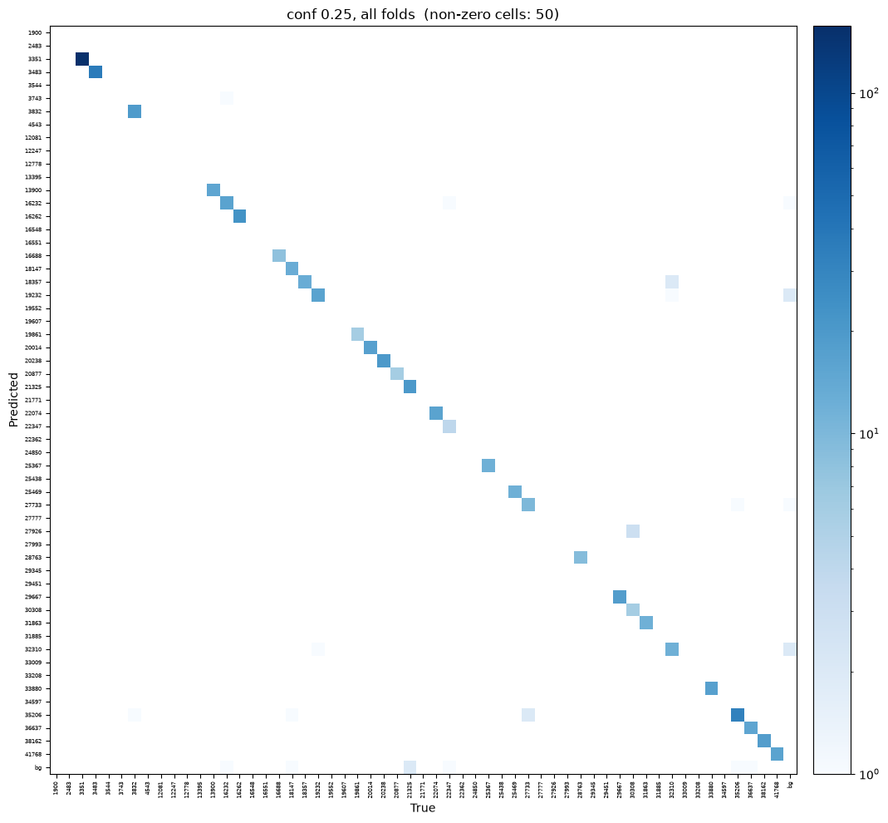
핵심: 615개 중 594개(96.6%)를 맞혔다. 다른 약 혼동 14개, 놓침 7개, 오탐 6개다.
알약몬에서 모델이 틀리면 복용 기록과 보상이 함께 틀린다. 그래서 점수 하나가 아니라 "틀릴 때 얼마나, 어떻게 틀리는가"와 "틀려도 사용자가 바로잡을 수 있는가"를 함께 봤다.
근거 | 내용 |
|---|---|
틀리는 양과 방식 | 5 fold 합계 615개 중 594개(96.6%)를 맞혔다. 놓침 7개, 오탐 6개, 다른 약으로 혼동 14개다(5.4) |
과적합 | 최종 설정 fold 0의 train-val 차이는 0.0255였다(5.4) |
경량화 뒤에도 같은 결과 | 가중치를 int8로 저장해 모델 파일을 80MB에서 20MB로 줄였고, 탐지 결과는 원래 모델과 같았다 |
앱의 안전장치 | 신뢰도 0.5 미만은 약으로 보지 않는다. 한 알약에 서로 다른 약 박스가 겹치면 하나만 남기고 나머지는 바꿀 후보로 둔다. 모델이 놓친 물체는 색으로 따로 찾아 "알 수 없는 물체"로 보여 준다(대회 사진 알약의 99%). 모든 결과는 사용자가 확인·수정한 뒤에 저장된다 |
남은 위험
클래스 불균형을 외부 데이터로 돌파한 것이 이 프로젝트의 핵심이었다. 우리는 희귀 약을 157개까지 채우고 대회 밖 알약까지 학습해 YOLO11m의 Kaggle 점수를 0.29946에서 0.63060으로 2.1배 올렸고, 이 모델을 int8 20MB로 줄여 웹 앱에서 기기 안 추론으로 배포했다. 라벨 보정, 분할, 외부 데이터 선별·검수를 모두 git 등에 기록해 같은 결과를 다시 만들 수 있다.
정확한 검출은 알약몬 보상 시스템의 전제다. 어떤 약을 몇 알 먹었는지 맞게 알아야 하루 기준량 안에서만 보상을 줄 수 있다.
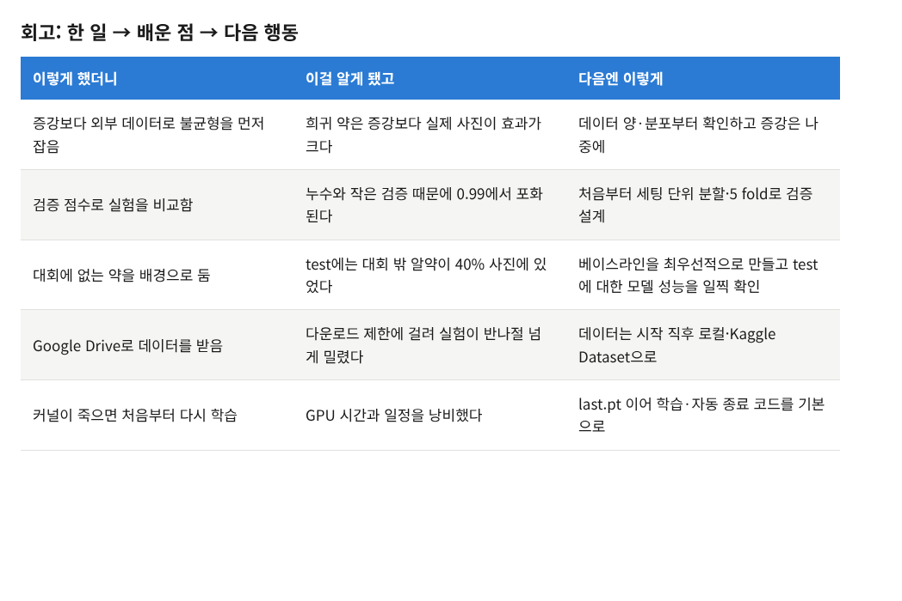
실험마다의 한계는 4장 각 절의 '실험별 한계'·'모델별 한계' 표에 적었다. 여기에는 프로젝트 전체에 걸친 한계만 모았다.
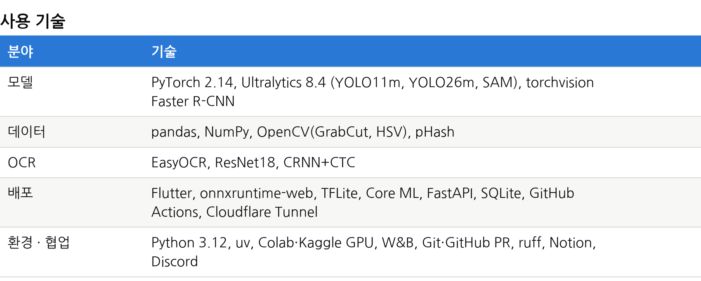
2026.11.08, 발표 피드백을 반영해 앞뒤가 맞지 않던 부분을 고쳤다. 실험 결과 수치는 바꾸지 않았다.
2026.11.09, 앱 연동 범위를 실제에 맞췄다. 실험 결과 수치는 바꾸지 않았다.